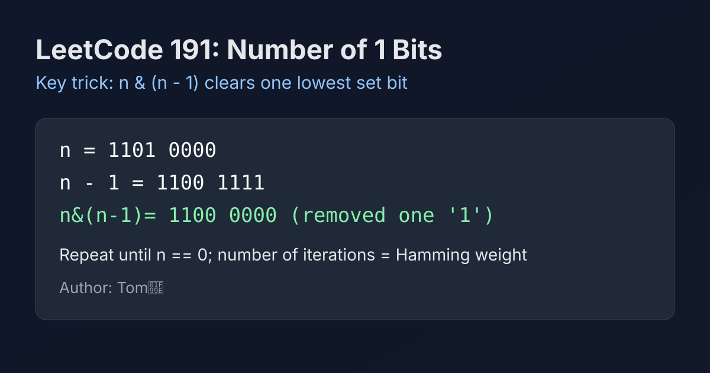

LeetCode 191: Number of 1 Bits (Brian Kernighan Bit-Clearing)
LeetCode 191Bit ManipulationToday we solve LeetCode 191 - Number of 1 Bits.
Source: https://leetcode.com/problems/number-of-1-bits/

English
Problem Summary
Given a positive integer interpreted as an unsigned 32-bit value, return the number of 1 bits in its binary representation (its Hamming weight).
Key Insight
The expression n & (n - 1) removes exactly the lowest set bit of n. So each loop iteration deletes one 1, and we count how many deletions happen before n becomes 0.
Brute Force and Limitations
We can scan all 32 bits with shift-and-mask: test n & 1, then shift. It is already O(32), but Kernighan’s method can do fewer rounds when set bits are sparse and highlights an important bit trick used in interviews.
Optimal Algorithm Steps
1) Initialize count = 0.
2) While n != 0: set n = n & (n - 1) and increment count.
3) Return count.
Complexity Analysis
Time: O(k), where k is number of set bits (worst-case 32).
Space: O(1).
Common Pitfalls
- Confusing signed display with underlying bit pattern.
- Using loops tied to decimal digits instead of binary transitions.
- Forgetting that input is conceptually unsigned 32-bit in some language APIs.
Reference Implementations (Java / Go / C++ / Python / JavaScript)
public class Solution {
public int hammingWeight(int n) {
int count = 0;
while (n != 0) {
n = n & (n - 1);
count++;
}
return count;
}
}func hammingWeight(num uint32) int {
count := 0
for num != 0 {
num = num & (num - 1)
count++
}
return count
}class Solution {
public:
int hammingWeight(uint32_t n) {
int count = 0;
while (n != 0) {
n = n & (n - 1);
++count;
}
return count;
}
};class Solution:
def hammingWeight(self, n: int) -> int:
count = 0
while n:
n &= n - 1
count += 1
return countvar hammingWeight = function(n) {
let count = 0;
while (n !== 0) {
n = n & (n - 1);
count++;
}
return count;
};中文
题目概述
给定一个按无符号 32 位整数理解的数字，返回其二进制表示中 1 的个数（Hamming weight）。
核心思路
n & (n - 1) 每次都会恰好消去 n 最低位的一个 1。因此循环次数正好等于 1 的数量，累加循环次数即可得到答案。
暴力解法与不足
可用 32 次移位与按位与逐位统计，复杂度同样可接受；但 Kernighan 写法在 1 比特较少时迭代更少，也更能体现位运算思维。
最优算法步骤
1）初始化 count = 0。
2）当 n != 0 时执行 n = n & (n - 1)，并将 count 加一。
3）返回 count。
复杂度分析
时间复杂度：O(k)，k 为二进制中 1 的个数（最坏 32）。
空间复杂度：O(1)。
常见陷阱
- 把有符号显示形式和底层位模式混淆。
- 用十进制位数思路去循环，导致逻辑错误。
- 忽略题目“按无符号 32 位处理”的语义细节。
多语言参考实现（Java / Go / C++ / Python / JavaScript）
public class Solution {
public int hammingWeight(int n) {
int count = 0;
while (n != 0) {
n = n & (n - 1);
count++;
}
return count;
}
}func hammingWeight(num uint32) int {
count := 0
for num != 0 {
num = num & (num - 1)
count++
}
return count
}class Solution {
public:
int hammingWeight(uint32_t n) {
int count = 0;
while (n != 0) {
n = n & (n - 1);
++count;
}
return count;
}
};class Solution:
def hammingWeight(self, n: int) -> int:
count = 0
while n:
n &= n - 1
count += 1
return countvar hammingWeight = function(n) {
let count = 0;
while (n !== 0) {
n = n & (n - 1);
count++;
}
return count;
};
Comments